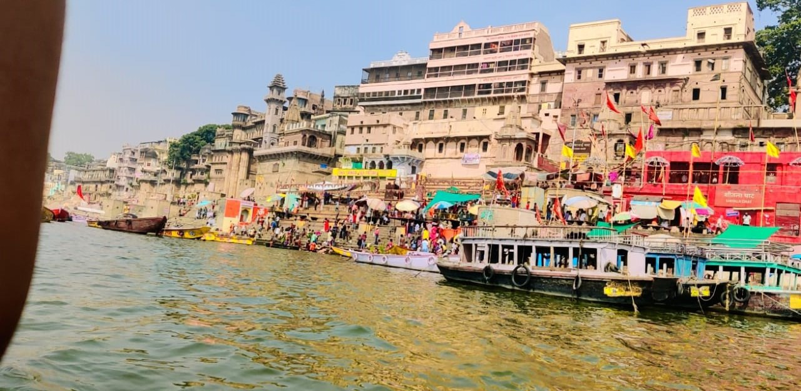
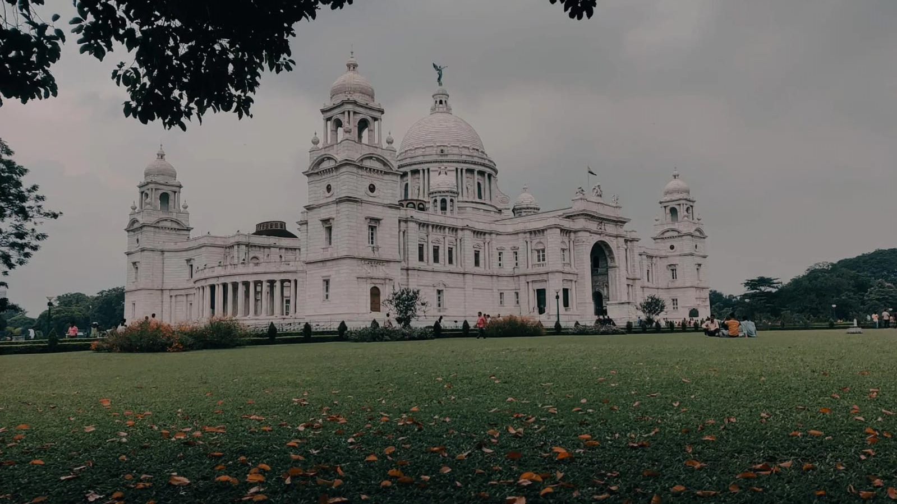
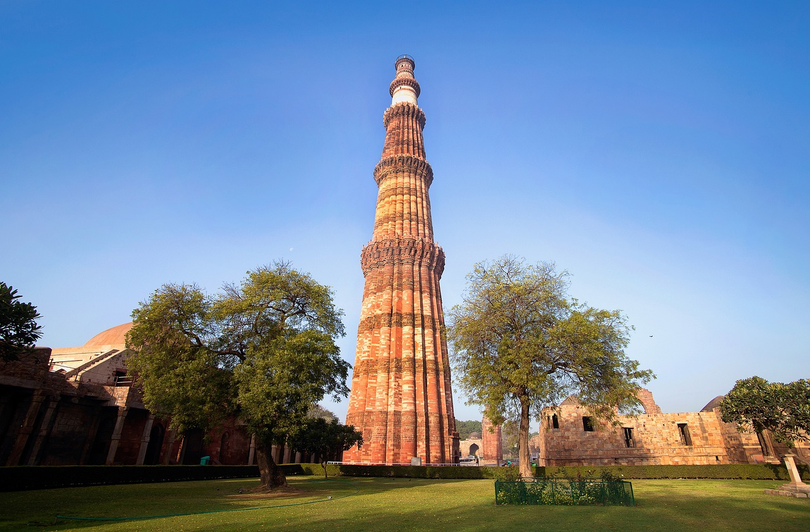

Traveling is my passion, and my blog is where I share my adventures with the world. It is a space where I document my journeys, from exploring bustling cities to relaxing in villages. I write about the places I visit, the food I taste, the people I meet, and the lessons I learn along the way. Each destination has its own story, and I love discovering hidden gems that others might overlook.
My blog is for anyone who loves to travel or dreams of seeing the world. I aim to provide useful tips, like how to plan trips, save money, and find unique experiences. I also share honest reviews of hotels, restaurants, and attractions to help my readers make informed choices.
Whether you are a seasoned travel or just starting out, my blog is a source of inspiration and practical advice. I believe traveling is not just about ticking off destinations; it is about connecting with new cultures, trying new things, and growing as a person. Through my stories, I hope to spark your wanderlust and encourage you to explore this amazing planet. Life is short-let is make the most of it by traveling more and creating unforgettable memories!
I recently fulfilled my dream of visiting Varanasi Ganga River for the first time was an unforgettable experience. As i stepped onto the ghats,the peaceful sound of flowing water and the sight of boats gently drifting instantly captured my attention. The atmosphere was filled with a mix of history,devotion and cultures.
Ganga Aarti in Varanasi is a mesmerizing ritual performed every evening at Dashashwamedh Ghat. Priests dressed in traditional attire conduct the ceremony with large brass lamps, incense, conch shells, and rhythmic chants. Devotees and tourists gather to witness the spiritual spectacle, where fire, water, and devotion come together in harmony. The aarti honors the sacred Ganges River, symbolizing purification and divine blessings. The glowing lamps reflecting on the river create a breathtaking and unforgettable experience.
Kolkata, the city of joy ,offers a mix of history,cultures and charm.Visit the iconic Victoria Memorial and marvel at its colonial beauty.Explore the Howrah Bridge and enjoy views of the Hooglhly River and boat ride.Seek blessings at the serene Dakshineswar Kali Temple. Discover India's oldest museum.End of the day at ParK Street, a lively spot for dining and entertainment. Kolkata's rich heritage promises a memorable experience.
A boat ride on the Hooghly River offers a tranquil escape and a glimpse into Kolkata rich heritage.As the lifeline of the city , the river is flanked by historical landmarks like the Howrah Bridge, Vidyasagar Setu, and ghats bustling with activity.Passengers can witness breathtaking sunsets, vibrant ferry traffic and iconic sights like Dakshineswar Temple and Belur Math along the banks.Whether a short ferry commute or a leisurely cruise, a Hooghly River ride blends natural beauty, history, and cultural vibrance seamlessly.
Delhi, Indias capital, blends history and modernity. Explore Red Fort, India Gate, and Qutub Minar. Wander Chandni Chowk for street food, visit Humayun Tomb, Lotus Temple, and vibrant markets. Experience culture at museums, gardens, and bustling Connaught Place.
Qutub Minar, a UNESCO World Heritage Site in Delhi, India, is a 73-meter-high minaret built in 1193 by Qutb-ud-din Aibak. Made of red sandstone and marble, it has five tapering stories adorned with intricate carvings and inscriptions. Later rulers, including Iltutmish and Firoz Shah Tughlaq, expanded it. The Qutub Complex also houses the Iron Pillar and other historic structures, making it a significant tourist and cultural landmark
Hi there, I am Abhishek Kumar and I created this blog to share my passion for travel and adventure!
As a software engineer by profession ,Welcome to my travel blog! I'm someone who loves exploring new places, meeting people , and experiencing the beauty and culture of the world.Traveling gives me a sense of freedom and fills me with unforgettable memories.Through this blog, I share stories of my adventures,from bustling cities to serene countryside escapes. Whether it's trying local food ,discovering hidden gems,or enjoying nature's wonders, I love capture every moment . My goal is to inspire others to travel , explore and create their own unique experiences,Join me as I share my journey, on destination at a time!